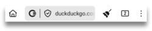
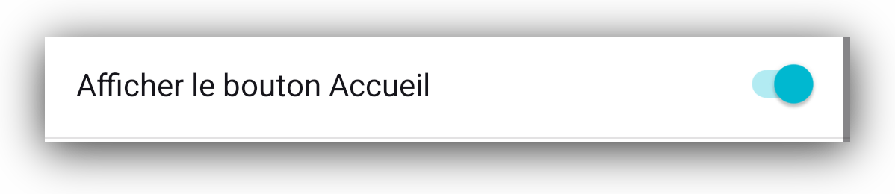
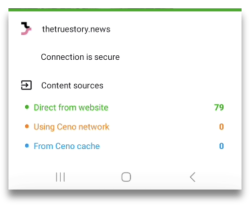
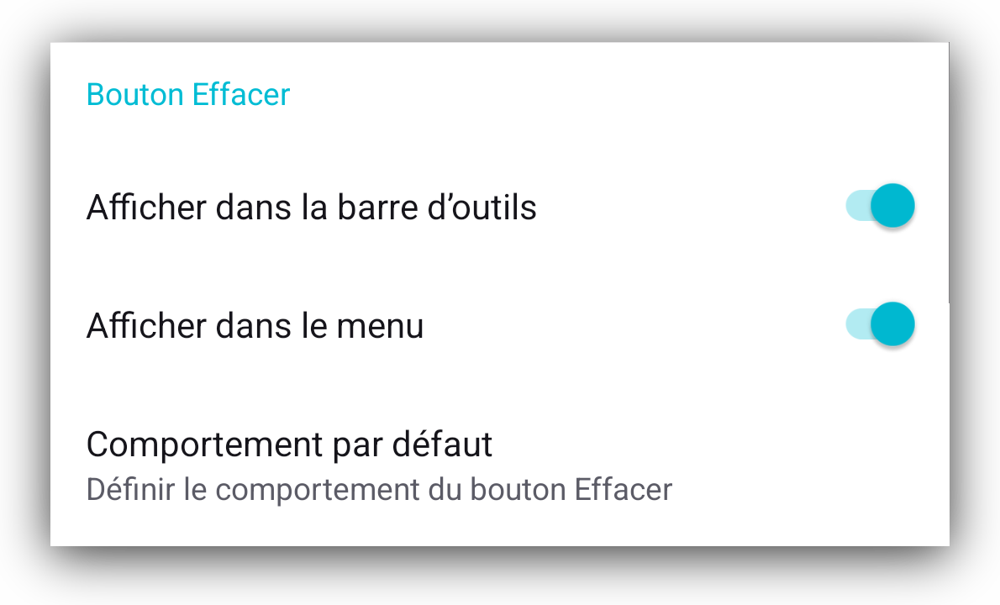
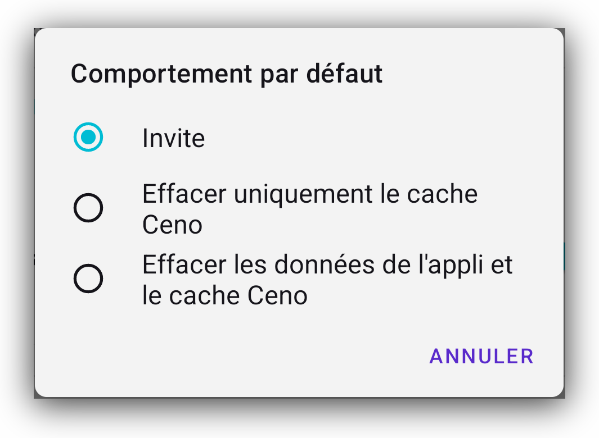
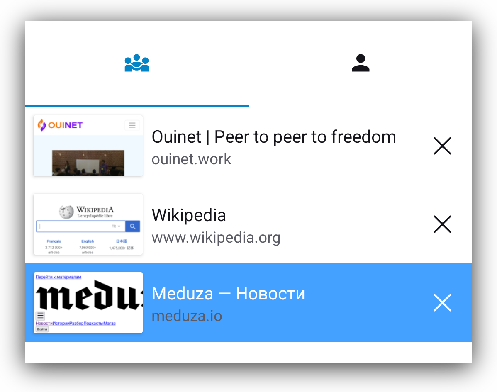
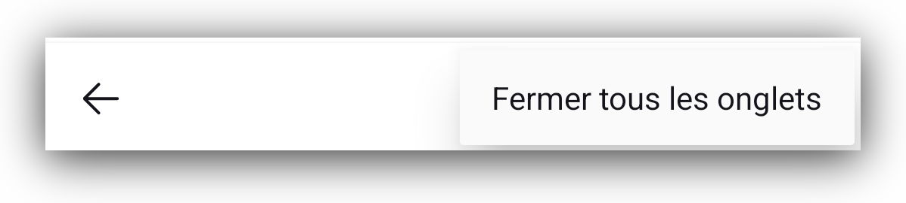
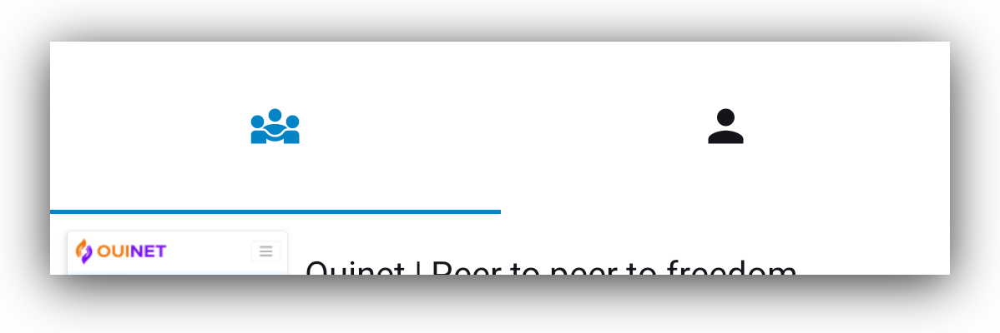
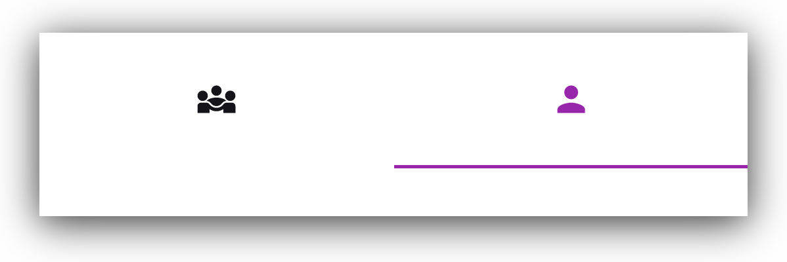
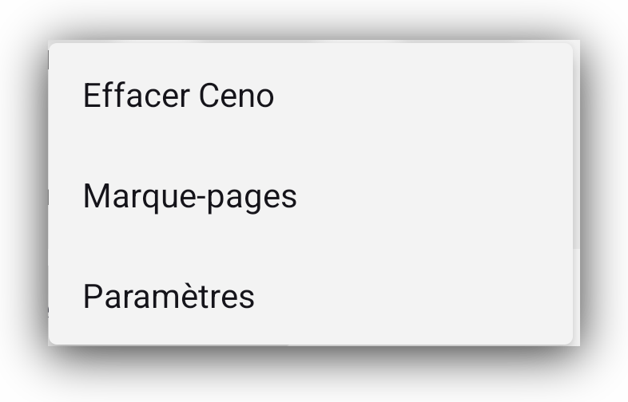

Fonctionnalités
Barre d'outils
Au bas de l'écran, vous verrez la barre contenant divers boutons. Certains d'entre eux n'ont probablement pas besoin d'explication, mais d'autres si. Jetons un coup d’œil à chacun d’eux :
Bouton d'accueil
Le premier est le bouton Accueil familier.

Vous pouvez configurer ce bouton pour être montré ou caché, mais en allant dans Paramètres > Personnalisations > Afficher le bouton d’accueil

Bouton Ceno
Ensuit le bouton Ceno. Appuyer dessus ouvrira un écran d'information qui montre d'où les composants du site ont été récupérés. Nous décrivons cet écran plus en détail dans les sections de navigation personnelle et publique.
Bouton de connexion sécurisé
Lorsque vous entrez l'adresse du site Web que vous souhaitez accéder, vous
verrez le bouton de connexion Sécurisé, représenté par un petit cadenas ou
un petit bouclier, qui indique que votre connexion à un site particulier est
sécurisée.
Si le cadenas ou le bouclier est traversé avec une ligne, cela signifie que la
connexion à ce site particulier n'est pas sécurisée. C'est la même chose que
dans d'autres navigateurs.

Note : même si la connexion à ce site n'est pas sécurisée, l'icône Ceno a un petit point vert. Ce point n'indique pas que la connexion est sécurisée, mais que les données ont été récupérées directement depuis le site d'origine.
Si vous appuyez dessus, vous verrez les détails de cette connexion. À titre d'illustration, nous incluons des images de connexion sécurisée ou non sécurisée.


Bouton nettoyer
Le premier bouton sur le côté droit de la barre d'adresse est le bouton Nettoyer, en forme de petit balai.
Appuyer dessus donne à l'utilisateur le choix pour effacer toutes les données Ceno, comme si Ceno n'était jamais utilisé, ou pour effacer seulement ce que Ceno stockait dans le cache. La première option nettoie toutes les préférences, signets, réglages et personnalisations, tandis que la seconde ne nettoie que les sites que l'application Ceno stocke dans le cache de votre appareil.

Si vous allez dans Paramètres > Personnalisations > bouton nettoyage vous pouvez choisir si vous voulez que le bouton nettoyer soit affiché dans la barre d'outils ou dans le menu.

Cliquer sur l'option comportement par défaut ouvrira une boîte de dialogue qui vous offre de choisir le comportement du Bouton nettoyage lorsque vous appuyez dessus. Il peut vous offrir un prompt, comme sur la capture d'écran ci-dessus, ou il peut immédiatement supprimer tout contenu cache ou même toutes les données Ceno.

Bouton des onglets
le bouton suivant est un petit rectangle avec un numéro dedans. Ce numéro indique le nombre d'onglets que l'utilisateur a ouverts.
Appuyer dessus ouvrira un écran où vous pouvez voir tous les onglets que vous avez ouverts.

Vous pouvez les fermer un par un, si vous appuyez sur le menu vertical dans le coin inférieur droit, vous obtiendrez l'option de les fermer tous ensemble.

Lorsque vous regardez l'écran de l'onglet, en haut de cet écran, vous verrez les icônes pour la navigation publique ou personnelle, et vous pouvez facilement passer de l'un à l'autre.
Vue lorsque l'icône de navigation publique est sélectionnée

Vue lorsque la navigation personnelle est sélectionnée.

Menu vertical
L'effet du menu vertical de trois points sur le côté droit de l'affichage de la barre d'outils dépend du contexte.
- Lors de l'ouverture d'une page web ouverte, ce menu affichera les options pertinentes à cette page.

La plupart des éléments de ce menu sont explicatifs. Mais si vous ne connaissez pas uBlock Origin, il s'agit d'un bloqueur d’annonces et de tracker.
La raison pour laquelle nous l’intégrons à notre navigateur Ceno est principalement pour empêcher la mise en cache inutile des publicités et éviter la mise en cache éventuelle des identifiants uniques associés à des trackers.
Pour en savoir plus sur ce bloqueur d'annonce et de tracker, veuillez visiter leur page web.
- Si vous appuyez sur ce menu depuis la page d'accueil de Ceno, vous pourrez voir l'élément qui vous permet de nettoyer Ceno (son action est la même que le petit balai sur l'écran d'accueil).

- Lorsque vous êtes sur l'écran des onglets, appuyer sur ce menu vous donnera seulement l'option de fermer tous les onglets